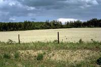

|
Climate:
| Total annual precipitation (mm) |
452 |
| Annual snowfall (cm) |
143 |
| Water deficit (mm) |
297 |
| Mean July temperature (C) |
+17.4 |
| Mean January temperature (C) |
-20.0 |

The climate is subhumid and cool, encouraging the production of forage crops and encompassing the northern limit of arable agriculture.
| |
Landscape:
The western part of this area is primarily rolling morainic plain,
the eastern portion is largely a level to undulating plain of
glaciofluvial origin.
The region slopes and drains eastward. Numerous small lakes and
wetlands occupy shallow depressions in the hillier areas.
|
![[ V F T ]](../../media/stuff/vft_spin.gif)
GPS: 54d 38.64m N, 107d 48.96m W, 1490 feet
06 July 96, 4:50 pm, Fuji Velvia 50, F8 1/60s
GPS: 53d 41.26m N, 103d 20.54m W, 781 feet
12 July 96, 4:15 pm, Fuji Velvia 50, F8 1/125s
GPS: 53d 19.39m N, 104d 02.53m W, 1446 feet
13 July 96, 10:00 am, Fuji Velvia 50, F22 1/15s
Soil:

Soils
are predominantly well to imperfectly drained dark grey although
other soil types are located in the area. For example, sandy deposits
can be found in the Fort a la Corne and Nisbet provincial forests.
|
Vegetation:
Most of this ecoregion was likely once covered by grassland vegetation.
Trembling aspen (shown left) and white spruce are dominant, while
local conditions dictate the prevalence of secondary species such
as balsam poplar, black spruce, tamarack
and jack pine. Water filled depressions and poorly
drained sites are usually covered with sedges and willow. Tamarack
attains best growth in this ecoregion. Grasses are common. Common
shrubs include honeysuckle, elderberry, green alder, mountain
maple, willow, blueberry and bearberry. Common plants are bunchberry,
twinflower, sarsaparilla, dewberry, horsetail and ostrich fern.
|
Wildlife:
Human Use:

Agriculture is the primary land use, followed by forestry. Hunting,
fishing and other recreational uses also occur within this ecoregion.
Production of spring wheat and other cereals, oilseeds and forage
crops are characteristic of this region. Community pastures provide summer range for livestock.
Forest productivity is variable depending on species and site.
|
|